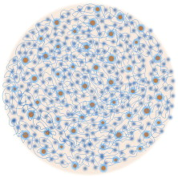
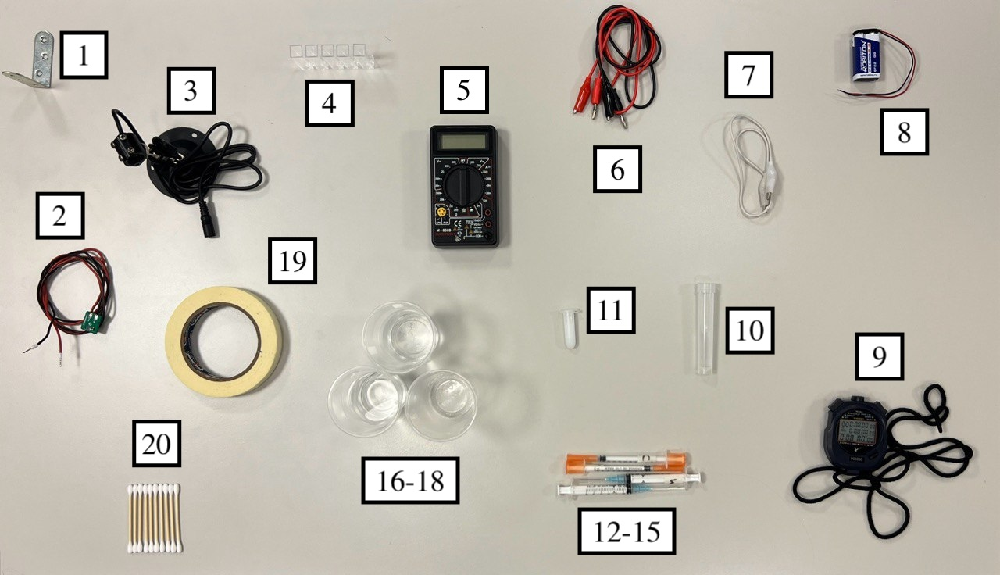
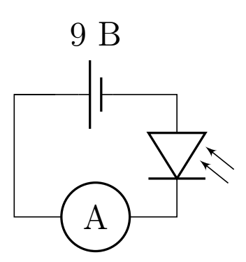
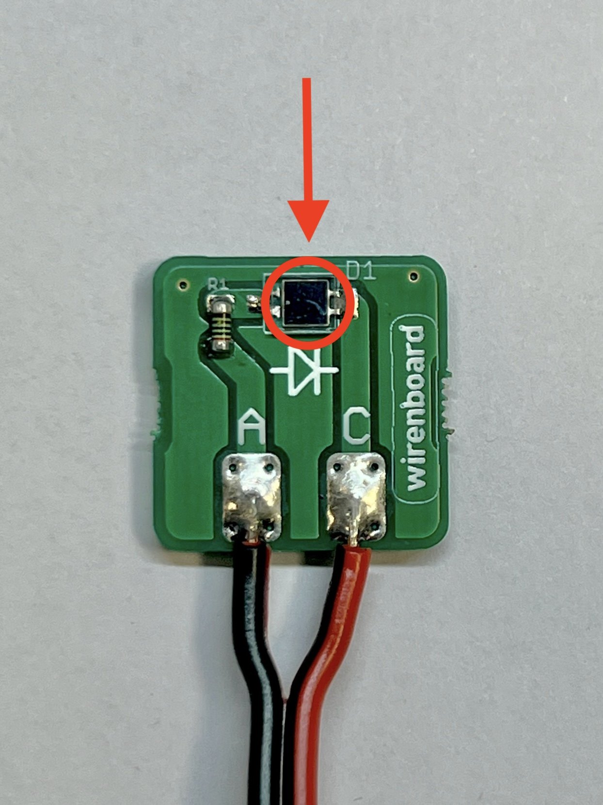
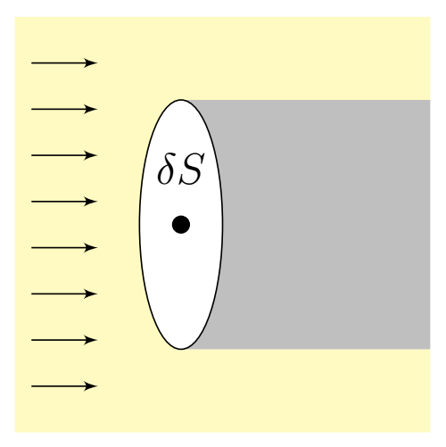
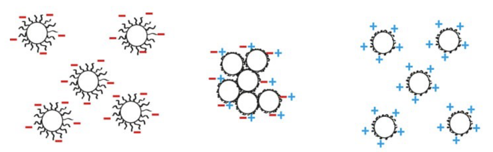
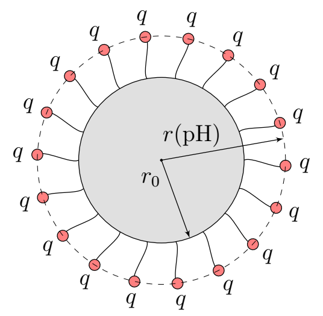

X25 (2025) — English translation
This problem is devoted to the study of protein behavior in an acidic environment. Casein, the main protein in milk, was chosen as the protein, and the acidic environment is created using citric acid $\rm H_3Cit$. Individual casein molecules in solution “stick together” into so-called micelles, which we will consider as balls of radius $r$ (see figure). Elementary charge $e=1.602\cdot10^{-19}~Кл$. Electrical constant $\varepsilon_0=8.85\cdot10^{-12}~Ф/м$
Elementary charge $e=1.602\cdot10^{-19}~Кл$. Electrical constant $\varepsilon_0=8.85\cdot10^{-12}~Ф/м$
Micelle consisting of a large number of casein molecules

Equipment Metal corner for attaching the photodiode Photodiode Laser in holder Optical cuvettes (5 pcs.) Multimeter Pair of banana-crocodile wires Crocodile-crocodile wire Crown battery with connector Stopwatch Test tube $10~мл$ with solution $\rm H_3Cit$ $1.1~г/л$ Microtube $2~мл$ with milk solution. In solution, the concentration of casein is $2.5~г/л$. Syringe “$M$” $1~мл$ for adding milk solution. Syringe “$C$” $1~мл$ for adding $\rm H_3Cit$ Syringe “$W$” $3~мл$ for adding water Syringe $3~мл$ for mixing A glass of water for preparing solutions A glass of water for rinsing A glass for draining used solutions Masking tape A set of cotton swabs Paper napkins (not shown in photo)

The optical cell is a hollow parallelipipedic vessel. There is a relief on two parallel sides of the cuvette, and it is by these sides that it should be held. The cuvettes should be illuminated through the sides without relief.
As part of the task, the state of the protein in the cuvette will be studied optically: by the absorption of light passing through the protein solution. The intensity of radiation incident on the photodiode is proportional to the current flowing through it in the opposite direction. In this task, we will measure the intensity $I$ in units of current ($мкА$) flowing through the photodiode. For measurements, use the electrical diagram shown below. Use ONLY a Krona battery as a voltage source! It is recommended to mix the contents of the cuvette using a syringe: draw a certain volume of the substance into it and then pour it back. This syringe should be rinsed in water, as drops of the last test solution remain in it.
Use ONLY a Krona battery as a voltage source!
It is recommended to mix the contents of the cuvette using a syringe: draw a certain volume of the substance into it and then pour it back. This syringe should be rinsed in water, as drops of the last test solution remain in it.

In this part of the problem, you are asked to study how the intensity of the laser beam $I_0$ changes when passing through a substance in which light scattering occurs, that is, you will need to find the transmittance $\alpha=I/I_0$, where $I$ is the intensity of the laser beam after passing through the substance. The quantities $I$ and $I_0$ cannot be measured directly due to the presence of light reflections at the air-cell, cell-water boundaries, as well as other factors. However, we can assume with good accuracy that their ratio $\alpha=I/I_0$ is equal to the ratio of the intensity of light passed through the cuvette with the solution under study to the intensity of light passed through the cuvette with pure water. Note that in the absence of laser illumination, a non-zero current flows through the photodiode due to background illumination. To prevent light scattered by the solution from affecting the current in the photodiode, place the photodiode at a distance $>20~\text{см}$ from the cuvettes being studied. You can adjust the focus of the laser by turning the head on it. The phrase “remove the dependence $\alpha$” only means obtaining the experimental values of the currents required to calculate the value of $\alpha$.
The figure on the right shows the front side of the photodiode. The arrow points to the photosensitive part (illumination of which produces a current).
The figure on the right shows the front side of the photodiode. The arrow points to the photosensitive part (illumination of which produces a current).

Rinse all cuvettes thoroughly and remove any remaining water using a cotton swab. The values obtained may depend on the cleanliness of the cuvettes. During further measurements, small displacements of the installation elements can lead to significant measurement errors, so before starting measurements, secure the installation elements on the table with masking tape.
During further measurements, small displacements of the installation elements can lead to significant measurement errors, so before starting measurements, secure the installation elements on the table with masking tape.
The distance between the inner smooth walls of the cuvette is $L_0=1.05~см$. Let us consider the scattering of light by matter from a theoretical point of view. Let the milk solution in the cuvette be illuminated by a parallel beam of light and the concentration of micelles is equal to $n$ (dimension $1/м^3$). Let us consider a circle of area $\delta S$, the center of which coincides with the center of the micelle. The plane of the circle is perpendicular to the direction of propagation of the light beam. We will assume that all light entering the circle is completely scattered. Then $\delta S$ is called the effective scattering area.
Let us consider the scattering of light by matter from a theoretical point of view. Let the milk solution in the cuvette be illuminated by a parallel beam of light and the concentration of micelles is equal to $n$ (dimension $1/м^3$).
Consider a circle of area $\delta S$, the center of which coincides with the center of the micelle. The plane of the circle is perpendicular to the direction of propagation of the light beam. We will assume that all light entering the circle is completely scattered. Then $\delta S$ is called the effective scattering area.

The scattering area $\delta S$ is related to the wave nature of light and is described by the Rayleigh formula for the scattering of light with wavelength $\lambda$ on a ball of radius $r$: $$\delta S=\cfrac{8\pi}{3}\left(\cfrac{2\pi}{\lambda}\right)^4\left(\cfrac{n_b^2-n_0^2}{n_b^2+2n_0^2}\right)^2r^6,$$где $\lambda $ – длина волны света, $n_b$ – показатель преломления шарика, $n_0$ – показатель преломления среды, в которой находится шарик. Длина волны лазера $\lambda=650~nm$, коэффициент преломления мицеллы $n_b=1.57$, коэффициент преломления воды $n_0=1.33$.
This part proposes to study how protein behaves in an acidic environment. To simplify measurements, it is recommended to use the following measurement procedure. Fill the cuvette $2.8~мл$ with water. Obtain the value $I_0$ of the intensity of light transmitted through water (medium without scattering). Add milk solution to cuvette $0.2~мл$. Consistently add citric acid solution to the cuvette at $0.1~мл$ until the volume of liquid in the cuvette is equal to $4.0~мл$. After each addition of acid, measure the absorption coefficient. Once the volume of liquid in the cuvette has reached $4.0~мл$, use a syringe to remove $1.0~мл$ of the contents of the cuvette. Continue to increase the acid concentration by adding $0.1~мл$ acid to the cuvette. Repeat the previous 2 steps until the concentration reaches the critical concentration $c_\text{крит}$, which will be described below. After any change in the composition of the solution in the cuvette, stir it! Immediately after adding acid, start the stopwatch. If the current value is established within $1~мин$ after adding acid, then the acid concentration is less than $c_{крит}$. If the current continues to change monotonically after a minute, then the concentration has reached $c_\text{крит}$. Light scattering occurs on randomly moving particles, which leads to small current fluctuations even in steady state.
After any change in the composition of the solution in the cuvette, stir it!
Immediately after adding acid, start the stopwatch. If the current value is established within $1~мин$ after adding acid, then the acid concentration is less than $c_{крит}$. If the current continues to change monotonically after a minute, then the concentration has reached $c_\text{крит}$.
Light scattering occurs on randomly moving particles, which leads to small current fluctuations even in steady state.
The hydrogen index $\mathrm{pH}$ is a measure of the acidity of aqueous solutions. $$\mathrm{pH}=-\log_{10}([\mathrm{H}+]),$$ где $[\rm H^+]$ – концентрация ионов $\rm H^+$ в молях на литр. Для воды водородный показатель равен 7 и она считается нейтральной средой, $\mathrm{pH}$ кислой среды меньше 7, а щелочной больше 7. Концентрацию $[\mathrm{H}^+]$ можно найти из концентрации лимонной кислоты $c$ (размерность $g/l$) как решение уравнения \[ c =\left( [\mathrm{H}^+] + \frac{[\mathrm{H}^+]^2}{k_1} \right) \cdot 210~г/моль, \]где $k_1 = 7.4 \cdot 10^{-4}~mol/l$.
Protein molecules are capable of dissociating, that is, $\mathrm{H^+}$ or $\mathrm{(OH)^-}$ ions can be split off from them. As a result, the protein molecule itself becomes an ion, that is, it acquires a non-zero charge. When an acid is added, the chemical environment changes, so the charge of the protein ion depends on $\mathrm{pH}$. Thus, micelles also have a charge depending on the $\mathrm{pH}$ environment. For each protein there is a value $\rm pH$ at which it is electrically neutral. This state of the protein is called the isoelectric state, and the corresponding value $\rm pH$ of the solution is the isoelectric point (IEP), designated $\rm pI$.
For each protein there is a value $\rm pH$ at which it is electrically neutral. This state of the protein is called the isoelectric state, and the corresponding value $\rm pH$ of the solution is the isoelectric point (IEP), designated $\rm pI$.
Micelles at $\rm pH >pI$ are indicated on the left, in the middle at $\rm pH = pI$ and on the right at $\rm pH < pI$.

In IET, the Coulomb repulsion becomes zero, and therefore at $\rm pH = pI$ the micelles begin to “stick together” in the same way as individual proteins combine into micelles. The average number of micelles stuck together into one will be denoted by the letter $P$.
The surface of the micelle is covered with long $\kappa$-casein molecules, which carry the entire charge of the micelle, since they are in the water and dissociate. To estimate, we will assume that the average charge of each $\kappa$-casein molecule is localized at its end and is related to $\rm pH$ by the following relation: \[ q = -9.5 \cdot 10^{-4} \left( 10^\mathrm{pH} - 10^{\mathrm{pI}}\right) \cdot e \]and in total on each Before the gluing process begins, the micelle contains $N=7.5 \cdot 10^3$ molecules of $\kappa$-casein. From a mechanical point of view, the micelle is a hard ball of protein ($\alpha$, $\beta$-caseins) and an elastic shell of long $\kappa$-casein molecules.

For $\kappa$-casein molecules, the effective elasticity coefficient $k$ can be introduced. That is, if the end of each of the $\kappa$-casein molecules in the micelle is acted upon by a force $F$, then the radius of the micelle is given by the equation \[k(r-r_0)=F\] This formula may be inaccurate for $\mathrm {pH}-\mathrm{pI}>0.4$.
Source: https://pho.rs/p/4182